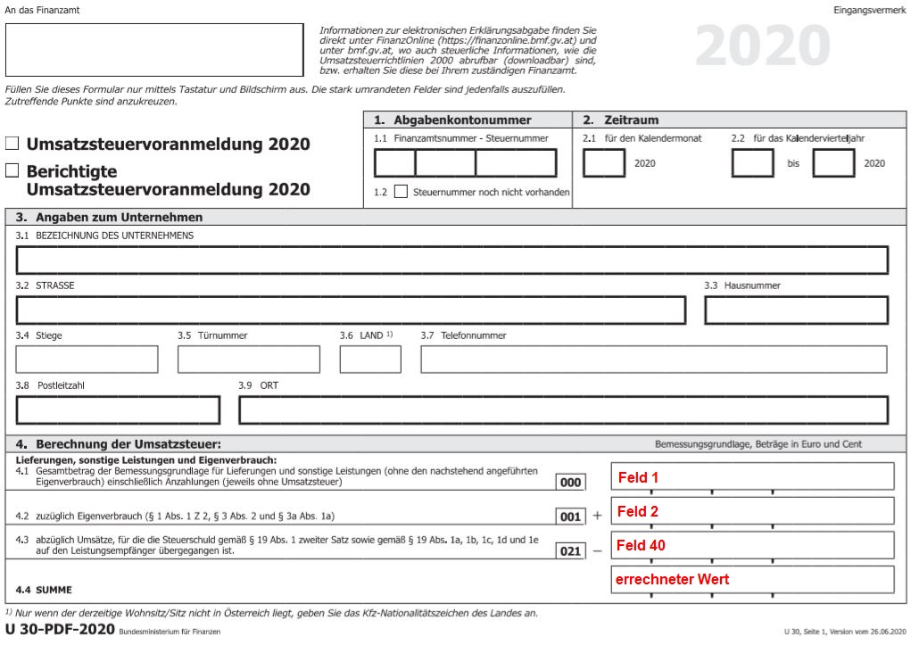
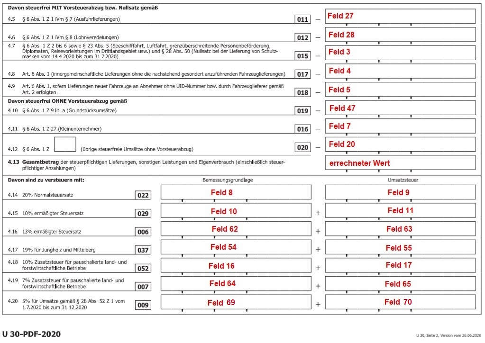
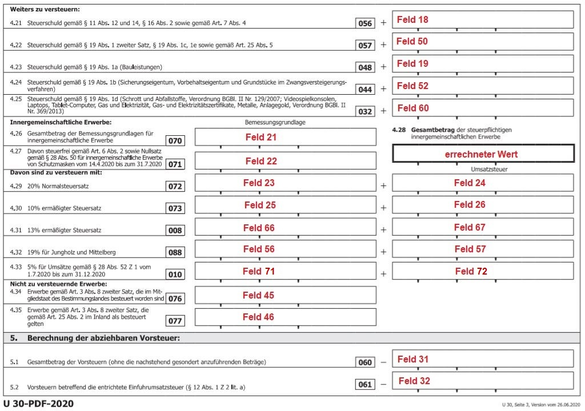
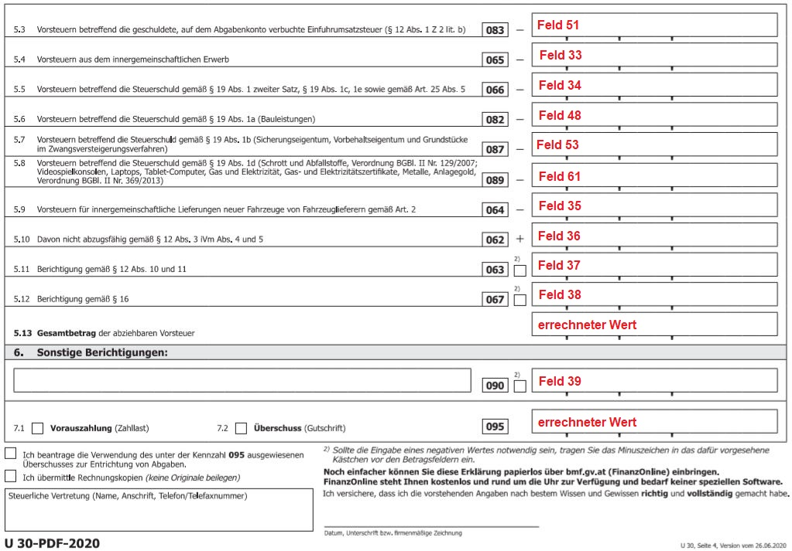
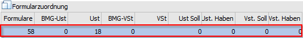
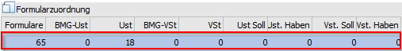
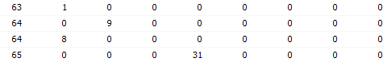
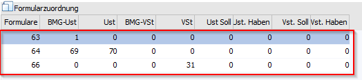
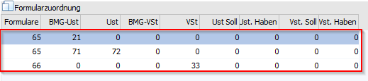

Formularzuordnung
Die Umsatzsteuervoranmeldung ab 07/2020 umfasst 4 Seiten; die Formulare in der WinLine wurden dazu mit den Nummern 63-66 definiert.
UVA-Formular 07/2020 - Seite 1 = Formular 63

UVA-Formular 07/2020 - Seite 2 = Formular 64

UVA-Formular 07/2020- Seite 3 = Formular 65

UVA-Formular 07/2020- Seite 4 = Formular 66

Beispiel einer Steuerzeile welche die Kennzahl 056 verwendet:
Für die Ausgabe des UVA-Formulars ab 01/2016 befindet sich die Kennzahl 056 auf der zweiten Seite des UVA-Formulars. Dies entspricht dem Formular mit der Nr. 58 und der Position 18 (die Position bleibt gleich).

Für die Ausgabe des UVA-Formulars ab 07/2020 befindet sich die Kennzahl 056 nun auf der dritten Seite des UVA-Formulars. Dies entspricht nun dem Formular mit der Nr. 65 und der Position 18 (die Position bleibt gleich).

Hinweis:
Bei einer bereits bestehenden Steuerzeile mit der Kennzahl056, ist keine Änderung notwendig, die Kennzahl am UVA-Formular wird richtig befüllt.
Beispiel zur Anlage einer "normalen" Steuerzeile:
Die Position 1 enthält z. B. den Gesamtbetrag der Bemessungsgrundlagen für Lieferungen, sonstige Leistungen und den Eigenverbrauch einschließlich Anzahlungen. Für die entsprechenden Steuerzeilen (Erlöse 0 %, 10 %, 20 % etc.) heißt das, dass für das Formular 63 die Bemessungsgrundlage Umsatzsteuer in die Position 1 gerechnet werden muss.



Die Position 8 enthält den Gesamtbetrag der Bemessungsgrundlagen für 20 %ige Umsätze. D. h. in der Steuerzeile muss bei den entsprechenden Zeilen (Umsatzsteuerzeilen mit 20 %) bei der BMG UST 8 eingetragen werden. Pro Steuerzeile kann ein Formular auch öfters verwendet werden, so dass jede Steuerzeile an jeder beliebigen Position hinterlegt werden kann.
Die Position 9 enthält den Steuerbetrag der 20 %igen Umsätze. Daher muss in den entsprechenden Steuerzeilen (Umsatzsteuerzeilen mit 20%) im Feld USt der Eintrag "9" (Formular 64) erfolgen.
Beispiel einer Steuerzeile welche die Kennzahl 009 verwendet
Für die Ausgabe des UVA-Formulars ab 07/2020 befindet sich die Kennzahl 009 auf der zweiten Seite des UVA-Formulars. Dies entspricht dem Formular mit der Nr.64. Die Bemessungsgrundlage Umsatzsteuer mit der Position 1 befindet sich auf der ersten Seite des UVA-Formulars, dies entspricht dem Formular 63.

Die Position 69 enthält den Gesamtbetrag der Bemessungsgrundlagen für 5 %ige Umsätze. D.h. in der Steuerzeile muss bei den entsprechenden Zeilen (Umsatzsteuerzeilen mit 5 %) bei der BMG UST 69 eingetragen werden. Damit muss in der zweiten Zeile das Formular 64 eingetragen werden. Dort kann die Position 69 bei der BMG UST hinterlegt werden. Pro Steuerzeile kann ein Formular auch öfters verwendet werden, so dass jede Steuerzeile an jeder beliebigen Position hinterlegt werden kann.
Die Position 70 enthält den Steuerbetrag der 5 %igen Umsätze. Daher muss in den entsprechenden Steuerzeilen (Umsatzsteuerzeilen mit 5%) im Feld USt der Eintrag "70" (Formular 64) erfolgen.
Beispiel einer Steuerzeile welche die Kennzahl 010 verwendet
Für die Ausgabe des UVA-Formulars ab 07/2020 befindet sich die Kennzahl 010 auf der dritten Seite des UVA-Formulars. Dies entspricht dem Formular mit der Nr.65. Die Bemessungsgrundlage für die Erwerbssteuer mit der Position 21 befindet sich auf der dritten Seite des UVA-Formulars, dies entspricht dem Formular 65.

Die Position 71 enthält den Gesamtbetrag der Bemessungsgrundlagen für 5 %ige innergemeinschaftliche Erwerbe. D.h. in der Steuerzeile muss bei den entsprechenden Zeilen (Steuerzeile mit 5 %) bei der BMG UST 71 eingetragen werden. Da dieses Feld aber schon mit der Position 21 belegt ist, wird eine zweite Zeile eröffnet, wo das Formular 65 eingetragen wird. Dort kann die Position 71 bei der BMG UST hinterlegt werden. Pro Steuerzeile kann ein Formular auch öfters verwendet werden, so dass jede Steuerzeile an jeder beliebigen Position hinterlegt werden kann.
Die Position 72 enthält den Steuerbetrag der 5 %igen innergemeinschaftlichen Erwerbe. Daher muss in den entsprechenden Steuerzeilen (Erwerbssteuerzeilen mit 5 %) im Feld USt der Eintrag "72" (Formular 65) erfolgen.